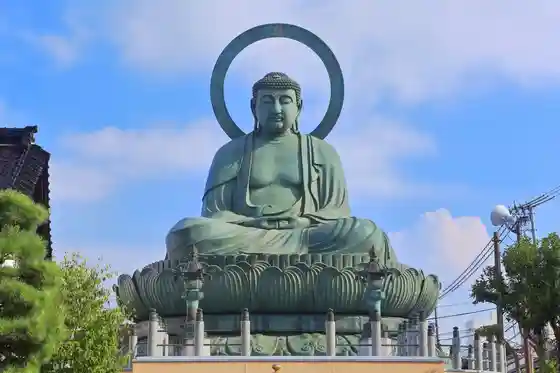
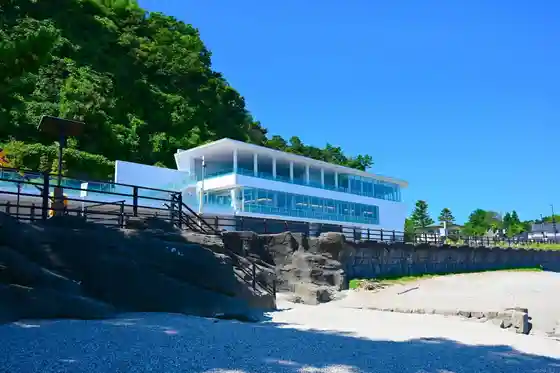

Kokutei Park Ame Sei Coast
Takaoka, Toyama · 0766-20-1547 · Official / source link
Takaoka Great Buddha
Takaoka, Toyama · 0766-23-9156 · Official / source link

Kokuho Takaoka Yama Zuiryu Tera
Takaoka, Toyama · 0766-22-0179 · Official / source link
Roadside Station Ame Sei
Takaoka, Toyama · 0766-53-5661 · Official / source link

Takaoka Otogi no Mori Park
Takaoka, Toyama · 0766-28-6500 · Official / source link
Kanaya Town (Sembon Koshi no Yanami) (Juyo Dentoteki Kenzobutsu Gun Hozon Chiku)
Takaoka, Toyama · 0766-20-1301 · Official / source link
Roadside Station Manyo Village Takaoka
Takaoka, Toyama · 0766-30-0011 · Official / source link
Sushi Kin
Takaoka, Toyama · 0766-23-5781 · Official / source link
Takaoka Fujiko F Fujio Furusato Gyararii (Takaoka Art Museum Nai)
Takaoka, Toyama · 0766-20-1170 · Official / source link
Nosa
Takaoka, Toyama · 0766-63-0001 · Official / source link
Kokuho Unryu Yama Shoko Tera
Takaoka, Toyama · 0766-44-0037 · Official / source link
Takaoka Kojo Park (Takaoka Castle Ruins)
Takaoka, Toyama · 0766-20-1563 · Official / source link
Yama Town Suji (Dozo Tsukuri no Streetscape) (Juyo Dentoteki Kenzobutsu Gun Hozon Chiku)
Takaoka, Toyama · 0766-20-1301 · Official / source link
Kankorosen Basu (Sekai Isan Basu)
Takaoka, Toyama · 0766-21-0950 · Official / source link
Manyosen Takaoka Eki / Dora Emon Toramu
Takaoka, Toyama · 0766-25-4139 · Official / source link
Ame Sei Onsen Iso Hanabi (Takaoka)
Takaoka, Toyama · 0766-44-6161 · Official / source link
Sui Sushi Takaoka Mise
Takaoka, Toyama · 0766-21-8193 · Official / source link
Ame Sei Shota Eda Hama Campground
Takaoka, Toyama · 0766-44-6200 · Official / source link
Futagami Yamaman Ha Line
Takaoka, Toyama · 0766-20-1301 · Official / source link
Showa no to
Takaoka, Toyama · 0766-22-6201 · Official / source link
Keta Shrine
Takaoka, Toyama · 0766-44-1836 · Official / source link
Imono Seisaku Experience (Nosa)
Takaoka, Toyama · 0766-63-0001 · Official / source link
Imono Workshop Risaburo
Takaoka, Toyama · 0766-24-0852 · Official / source link
Suzu no Akusesarii Experience (Otera Kohachiro Shoten Sabo Gyararii Otera)
Takaoka, Toyama · 0766-25-1911 · Official / source link
Otera Kohachiro Shoten Sabo Gyararii Otera
Takaoka, Toyama · 0766-25-1911 · Official / source link
Toyamaken Sangyo Sozo Center (Takaoka Teku no Domu)
Takaoka, Toyama · 0766-26-5151 · Official / source link
Takaoka Waido 1 Nichi Furii Kippu
Takaoka, Toyama · 0766-20-1547 · Official / source link
Momentamufakutorii Orii
Takaoka, Toyama · 0766-23-9685 · Official / source link
Takaoka no Supa Sento Yo Damari Baths
Takaoka, Toyama · 0766-27-8800 · Official / source link
Takaoka Kojo Koen Zoo
Takaoka, Toyama · 0766-20-1565 · Official / source link
Ramen Jigen
Takaoka, Toyama · 0766-25-2598 · Official / source link
Nosa IMONO KITCHEN
Takaoka, Toyama · 0766-63-0050 · Official / source link
Takaoka Chiiki Jibasangyo Center ZIBA
Takaoka, Toyama · 0766-25-8283 · Official / source link
Takaoka Mikuruma Yama Hall
Takaoka, Toyama · 0766-30-2497 · Official / source link
Myuze Fukuoka Kamera Kan
Takaoka, Toyama · 0766-64-0550 · Official / source link
Do no Chakushoku Experience (Momentamufakutorii Orii)
Takaoka, Toyama · 0766-23-9685 · Official / source link
Sushi Tokoro Narumi
Takaoka, Toyama · 0766-73-2930 · Official / source link
Ma Itadaki Yama Kuniyasu Tera
Takaoka, Toyama · 0766-44-0610 · Official / source link
Takaoka Manyo Rekishikan
Takaoka, Toyama · 0766-44-5511 · Official / source link
Sushi Kan
Takaoka, Toyama · 0766-21-3632 · Official / source link
Sakura Hisashi Shi
Takaoka, Toyama · 0766-28-1076 · Official / source link
Takaoka Art Museum
Takaoka, Toyama · 0766-20-1177 · Official / source link
Ninja Hattori Kun Ressha
Takaoka, Toyama · 076-251-5655 · Official / source link
Takaoka Doki Tenjikan (Roadside Station (Manyo Village Takaoka) Nai)
Takaoka, Toyama · 0766-30-0850 · Official / source link
Aji Kiju Shi
Takaoka, Toyama · 0766-25-1051 · Official / source link
Hisashi Shi Izakaya Takashi Jin
Takaoka, Toyama · 0766-22-5551 · Official / source link
Nichi no Shutsu Sushi
Takaoka, Toyama · 0766-22-1781 · Official / source link
Imizu Shrine (Takaoka Kojo Koennai)
Takaoka, Toyama · 0766-22-3104 · Official / source link
Maeda Toshinaga Hakasho
Takaoka, Toyama · 0766-20-1547 · Official / source link
Sushi Izakaya Nigiriya
Takaoka, Toyama · 0766-53-5864 · Official / source link
Shota Eda Hama Beach
Takaoka, Toyama · 0766-20-1301 · Official / source link
Uingu Uingu Takaoka / Takaoka Ritchu O Library
Takaoka, Toyama · 0766-20-1818 · Official / source link
Umibe no Yado Onnaiwa So
Takaoka, Toyama · 0766-44-2838 · Official / source link
Iwasaki no Hana Lighthouse
Takaoka, Toyama · 0766-20-1547 · Official / source link
Takaoka Fushiki Kitamae Fune Museum
Takaoka, Toyama · 0766-44-3999 · Official / source link
Hotel Nyuotani Takaoka
Takaoka, Toyama · 0766-26-1111 · Official / source link
amida coffee
Takaoka, Toyama · 0766-75-8377 · Official / source link
Na
Takaoka, Toyama · 0766-22-3542 · Official / source link
Aka Renga no Tatemono
Takaoka, Toyama · 0766-20-1301 · Official / source link
Katakago
Takaoka, Toyama · 0766-21-3824 · Official / source link
Minka Hotel (Kin no Sanzun)
Takaoka, Toyama · 080-5859-6343 · Official / source link
Obanzai Kafe Hiraki Kombu Mise
Takaoka, Toyama · 070-2318-7569 · Official / source link
Yama Town Vare
Takaoka, Toyama · 0766-75-9614 · Official / source link
Takeda Ie House
Takaoka, Toyama · 0766-44-0724 · Official / source link
Yoshihisa no Streetscape (Sama no Ko no Streetscape)
Takaoka, Toyama · Official / source link
WAKKA
Takaoka, Toyama · 070-8930-2618 · Official / source link
Takaoka Sekino Shrine
Takaoka, Toyama · 0766-25-2491 · Official / source link
Suido Tsutsuji Park
Takaoka, Toyama · 0766-22-1086 · Official / source link
Toyamaken Takaoka Bunka Horu
Takaoka, Toyama · 0766-25-4141 · Official / source link
Takaoka Ritsu Museum (Takaoka Kojo Koennai)
Takaoka, Toyama · 0766-20-1572 · Official / source link
Takaoka Fushiki Kisho Museum
Takaoka, Toyama · 0766-44-6905 · Official / source link
Nihonryori Tsuma Asa Hotel Nyuotani Takaoka
Takaoka, Toyama · 0766-25-4033 · Official / source link
Fukuoka Koi no Sato Park
Takaoka, Toyama · 0766-64-1426 · Official / source link
Kifune Castle Ruins
Takaoka, Toyama · 0766-20-1301 · Official / source link
Gin Cho Takaoka Kiriki Town Mise
Takaoka, Toyama · 0766-53-4134 · Official / source link
Sojidera
Takaoka, Toyama · 0766-22-4073 · Official / source link
Takaoka Machinaka Nori Hodai 1 Nichi Furii Kippu
Takaoka, Toyama · 0766-20-1547 · Official / source link
Takaoka Manten Hotel Ekimae
Takaoka, Toyama · 0766-27-0100 · Official / source link
Izakaya Takamasa
Takaoka, Toyama · 0766-24-5745 · Official / source link
Rosutowakkusu Rabo (Naka Village Seisakusho)
Takaoka, Toyama · 0766-21-1821 · Official / source link
Fukuoka Sogo Bunka Center U Horu
Takaoka, Toyama · 0766-64-1030 · Official / source link
Tonami Shoten
Takaoka, Toyama · 0766-21-1677 · Official / source link
Dozo no Yado Tokoro Etsu
Takaoka, Toyama · Official / source link
Anshingohan
Takaoka, Toyama · 0766-28-0082 · Official / source link
KANAYA Shorumu
Takaoka, Toyama · 070-5630-9206 · Official / source link
KOMBU HOUSE
Takaoka, Toyama · 090-6276-9034 · Official / source link
Kurafutan
Takaoka, Toyama · 0766-75-9013 · Official / source link
Kaku Kyu Ryokan
Takaoka, Toyama · 0766-22-0354 · Official / source link
Yumi no Shimizu
Takaoka, Toyama · Official / source link
Dora Taro (Kanzaki Yo Goro Shoten)
Takaoka, Toyama · 0766-75-7508 · Official / source link
Machikojogaitonamu Kinzoku Ato Art Museum FACTORY ART MUSEUM TOYAMA
Takaoka, Toyama · 0766-64-0501 · Official / source link
Takaoka Imono Museum
Takaoka, Toyama · 0766-28-6088 · Official / source link
Etchu Kokubunji Ato
Takaoka, Toyama · 0766-20-1463 · Official / source link
Toyamaken Sogo Dezain Center
Takaoka, Toyama · 0766-62-0510 · Official / source link
Seiaguriishisutemu Feruveru
Takaoka, Toyama · 0766-64-8805 · Official / source link
Hokushin Kogyo Tokoro
Takaoka, Toyama · 0766-63-5538 · Official / source link
Shuzen
Takaoka, Toyama · 0766-92-2415 · Official / source link
NIJIWO TUKURU tufting studio
Takaoka, Toyama · Official / source link
Oihara Mochi Mise
Takaoka, Toyama · 0766-64-3500 · Official / source link
Gagaku no Kan
Takaoka, Toyama · 0766-64-0390 · Official / source link
Kojo Tei
Takaoka, Toyama · 0766-28-6685 · Official / source link
Saeki Ie House
Takaoka, Toyama · 0766-20-1463 · Official / source link
Etchu Manyo Kahi Otomo Iemochi Zo (Futagami Yama)
Takaoka, Toyama · Official / source link
Takaoka Doki Yotsu I Tenjikan
Takaoka, Toyama · 0766-24-0025 · Official / source link
Yamaguchi Kyu Jo Shorumu
Takaoka, Toyama · 0766-22-0993 · Official / source link
Taka Ryo Sangyo
Takaoka, Toyama · 0766-63-5031 · Official / source link
Tsune Sei Oji no Haka
Takaoka, Toyama · Official / source link
Takaoka Dozo Tsukuri no Machi Museum
Takaoka, Toyama · 0766-25-5223 · Official / source link
Tomiyo to Genjibotaru Oyobi Heigabotaru no Seisokuchi
Takaoka, Toyama · Official / source link
Etchu Manyo Kahi (Tsumama Park)
Takaoka, Toyama · Official / source link
Orii gallery Hachi no Kura Momentamufakutorii Orii
Takaoka, Toyama · 0766-60-8106 · Official / source link
Kitamura Kikai
Takaoka, Toyama · 0766-63-1100 · Official / source link
Hana Sakura Kansatsu Hono Ba
Takaoka, Toyama · Official / source link
Kishi Tokawa Sakura Namiki
Takaoka, Toyama · 0766-64-1427 · Official / source link
Shoku no Wa Kafe
Takaoka, Toyama · 0766-21-6300 · Official / source link
Okoshi Butsudan
Takaoka, Toyama · 0766-64-4070 · Official / source link
Naka Village Bijutsu Kogei
Takaoka, Toyama · 0766-22-6409 · Official / source link
Ahora Aqui (Aoraki)
Takaoka, Toyama · 0766-53-5104 · Official / source link
(Kabu) Fujita Doki Seisakusho
Takaoka, Toyama · 0766-25-3365 · Official / source link
Erumu Sutei TAKAOKA
Takaoka, Toyama · 080-8589-8501 · Official / source link
(Kabu) Oda Sachi Doki
Takaoka, Toyama · 0766-24-6154 · Official / source link
merry*smile caf?
Takaoka, Toyama · 0766-75-3586 · Official / source link
Wa Nichi Yunichi
Takaoka, Toyama · Official / source link
Takaoka Yakusho
Takaoka, Toyama · 0766-20-1111 · Official / source link